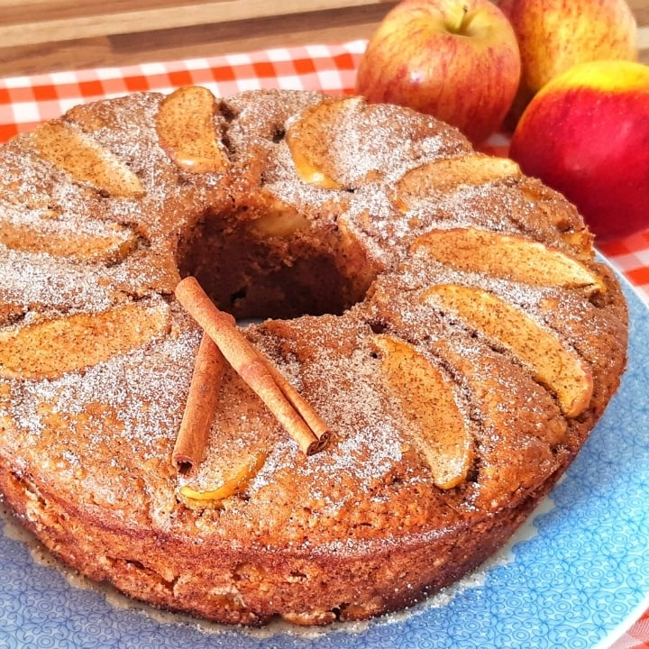

Receita Bolo de Maçãs com Canela

Receita deliciosa de bolo de maçãs
Ingredientes:
- 2 xícaras de açúcar
- 1 xícara de óleo - de preferência para milho ou canola
- 4 ovos inteiros
- 2 xícaras de farinha de trigo
- 3 maçãs, sem casca, picadas
- 1 colher de sopa de fermento para bolo
- 1 colher de café de canela em pó
- 1 punhado (a gosto, opcional) de uvas passas açúcar e canela para untar
Procedimentos:
- Bater no liquidificador o óleo e os ovos. Acrescentar o açúcar, as cascas das maçãs e bater.
- Num recipiente separado peneirar a farinha de trigo, acrescentar o fermento, as maçãs picadas em cubos e as passas.
- Misturar as duas misturas. Coloque em uma assadeira untada e enfarinhada, levar ao forno.
- Depois de pronto, polvilhar com açúcar de confeiteiro e canela.